Overview
ส่วนต่างๆ 3 ส่วนที่ประกอบกันขึ้นมาเป็นระบบ 945
- ส่วน Automatic Workflow :: ส่วนนี้เป็นการบันทึก Operations ต่างๆที่เกิดขึ้นจากระบบหน้าบ้านทั้งหมด เช่นการขาย ค่าขนส่ง การส่งของ โดยทั้งหมดจะยิงผ่าน API เข้ามาทางหน้าต่างของ Odoo/945 ที่เกี่ยวข้อง ทำให้เกิดการบันทึกบัญชีตามกระบวนการ และไปจบที่การตั้งหนี้เพื่อรอการ Manual เคลียร์โดยนักบัญชี
- ส่วน Manual Operations :: เป็นการทำงานโดยนักบัญชีผ่านหน้าจอเพื่อทำงานต่างๆของ Odoo เช่น การจ่ายหนี้ การจ่าย Commission การรับเงินเข้าธนาคาร
- ส่วน Reporting :: ข้อมูลด้านบัญชีทั้งหมดที่เกิดขึ้นในข้อ 1 และ 2 จะถูกนำมาวิเคราะห์ผ่านระบบรายงานของ Odoo หรือผ่านระบบ BI หลังบ้านอื่นๆ
Note
ส่วนนี้ทำงานอัตโนมัติทั้งหมดโดยผู้ใช้แทบไม่ต้องทำอะไร เอกสารชุดนี้จะแนะนำส่วนนี้พอสังเขปเพื่อให้เห็นการทำงานในระบบ
Automatic Workflow
Manual Operations
Clear Account Receivable
เมื่อได้รับ Statement จากธนาคารว่าได้รับเงินเข้ามาจากลูกหนี้ของทาง 945 และต้องการเคลียร์ลูกหนี้ที่ค้าง
- ตั้งค่า Mass Automatic Reconcile สำหรับการเคลียร์ลูกหนี้
- นำเข้า Statement ตามที่ได้รับแจ้งจากธนาคาร
- ทำการ Reconcile และตรวจสอบผลลัพธ์
1. การตั้งค่า Mass Automatic Reconcile
Accounting > Accounting > Actions > Mass Automatic Reconcile

2. นำเข้า Statement ตามที่ได้รับแจ้งจากธนาคาร
- เตรียม Excel โดยใช้ข้อมูลจาก statement ที่ได้รับมา
- ที่เมนู Journal Entries สร้างรายการใหม่ ซึ่งจะทำหน้าที่เป็น Payment Entry
- คลิกเมนู Action / Import Excel
- ตรวจทานให้เรียบร้อยจึงก่อน Post
2. นำเข้า Statement ตามที่ได้รับแจ้งจากธนาคาร
ค้นหา journal items ที่สนใจเพื่อ export มาเป็นค่าเริ่มต้น
Note
ขั้นตอนนี้เป็นขั้นตอนพิเศษ ชีวิตจริงอาจใช้ข้อมูลจาก statement ตรงๆก็ได้
2. นำเข้า Statement ตามที่ได้รับแจ้งจากธนาคาร
ค้นหารายการที่ยังไม่ได้ล้าง โดยการใช้ Advance Search ตามการทำงานปกติ

2. นำเข้า Statement ตามที่ได้รับแจ้งจากธนาคาร
เลือกรายการที่สนใจ เพื่อนำข้อมูลออกมาที่ Excel

2. นำเข้า Statement ตามที่ได้รับแจ้งจากธนาคาร

2. นำเข้า Statement ตามที่ได้รับแจ้งจากธนาคาร

2. นำเข้า Statement ตามที่ได้รับแจ้งจากธนาคาร
เพิ่มรายการในขา Bank เพื่อให้ Journal Entry นี้ดุล

Note
ระบบจะใช้ sheet = Journal Items ในการอัพเดทข้อมูล
2. นำเข้า Statement ตามที่ได้รับแจ้งจากธนาคาร
สร้าง Journal Entry ใหม่ ทำหน้าที่เป็นเสมือนกับ Payment Entry
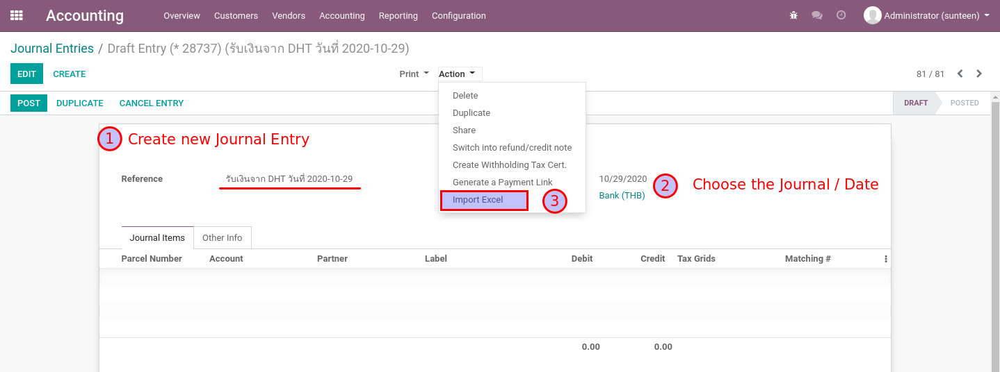2. นำเข้า Statement ตามที่ได้รับแจ้งจากธนาคาร
เพิ่มรายการด้วยการ Import Excel ตามที่ได้เตรียมไว้

2. นำเข้า Statement ตามที่ได้รับแจ้งจากธนาคาร
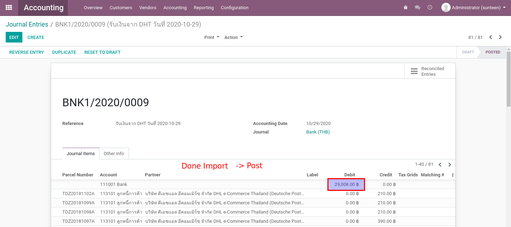Note
ต้องตรวจสอบให้แน่ใจ แล้วจึงค่อย Post
3. ทำการ Reconcile และตรวจสอบผลลัพธ์
- ที่เมนู Mass Automatic Reconcile เลือก Profile = Customer Payment
- กดปุ่ม Start Auto Reconciliation ระบบจะทำการ Reconcile รายการที่มี Partner และ Parcel ID เดียวกัน
- กดปุ่ม Display Items Reconciled On The Last Run เพื่อดูรายการที่ถูก Reconciled ไป
- หากต้องการยกเลิกสิ่งที่ทำไปให้ทำการ Reverse Entry
3. ทำการ Reconcile และตรวจสอบผลลัพธ์
ไปที่เมนู Mass Automatic Reconcile แล้วเลือก/สร้าง Profile = Customer Payment แล้วจีง Start Reconcile
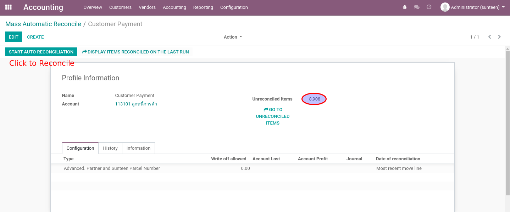3. ทำการ Reconcile และตรวจสอบผลลัพธ์
ระบบจะมีการเก็บประวัติของการ Reconcile เอาไว้ สามารถคลิกเพื่อตรวจสอบได้

Note
เราสามารถตั้ง Schedule Job ให้ Start Auto Reconciliation ได้อย่างอัตโนมัติหากต้องการ
3. ทำการ Reconcile และตรวจสอบผลลัพธ์
รีวิวรายการที่เกิดขึ้น ให้สังเกตุที่ Reconcile ID ที่ระบบได้สร้างขึ้นเพื่อ Match Dr/Cr ล้างกัน

3. ทำการ Reconcile และตรวจสอบผลลัพธ์
หากต้องการยกเลิกสิ่งที่ได้ทำไป ให้ทำการ Reverse Entry ระบบจะสร้างอีก Journal Entry เพื่อล้างตัวเอง

Clear AP Commission
การบันทึกคู่บญชีอัตโนมัติของ Delivery Complete ได้ทำให้เกิดค่าคอมมิชชั่น ซึ่งทาง 945 ต้องทำจ่ายให้กันผู้ได้รับส่วนแบ่ง
- ตั้งค่า Mass Automatic Reconcile สำหรับการเคลียร์เจ้าหนี้
- เลือกรายการที่ต้องทำจ่าย โดยดูตามวันที่ (ศุกร์ถัดไป) และนำไปสร้าง Journal Entry สำหรับการจ่ายเงิน
- ออก Withholding Tax Cert ให้กับผู้รับเงิน
- ทำการ Reconcile และตรวจสอบผลลัพธ์
1. การตั้งค่า Mass Automatic Reconcile
Accounting > Actions > Mass Automatic Reconcile
สร้าง Profile สำหรับ Supplier Payment
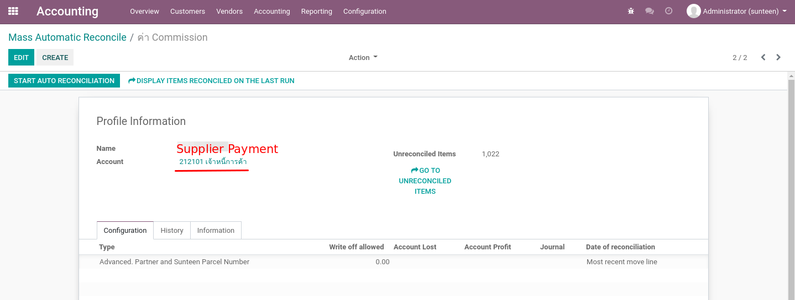Note
เนื่องจากเราไม่ได้แบ่ง Account Code เป็็นเรื่องย่อยๆ Mass Reconcile นี้จะใช้่ร่วมกับการจ่ายเงินด้านอื่นๆที่ใช้ AP Account เดียวกันด้วย
2. เลือกรายการที่ต้องทำจ่าย
สำหรับ Commission จะดูตามวันที่ (เช่น ศุกร์ถัดไป) โดยสามารถค้นหาที่เมนู Journal Items ด้วย Filter ดังต่อไปนี้
- Filtered / Group By
- Posted
- Unreconciled
- Account = เจ้าหนี้การค้า
- Journal Item’s Label = Account Payable (Commission)
- Group by
- Due Date
- Partner
- เลือกรายการที่ต้องการจ่ายค่า Commission ให้และทำการ Export Excel (ระบบจะสลับ Dr/Cr ตั้งให้)
2. เลือกรายการที่ต้องทำจ่าย
จากรายการที่เลือก ให้เลือก Action > Export Excel
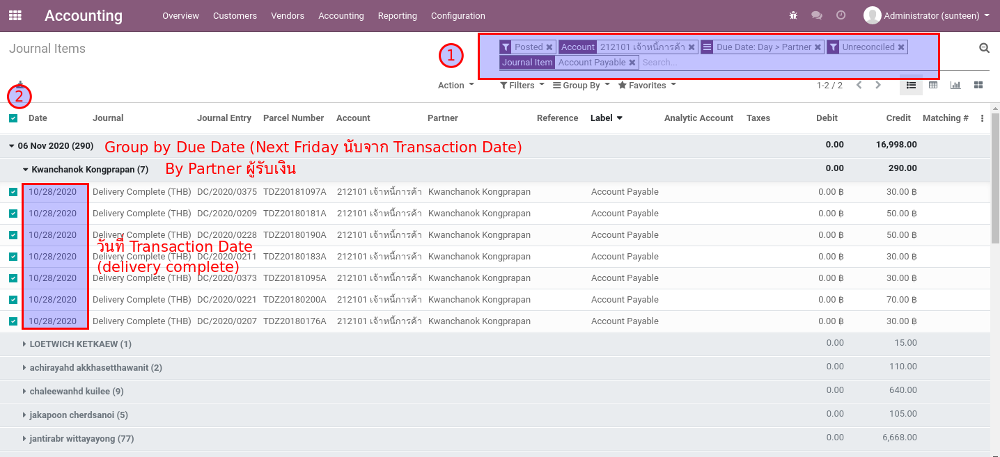2. เลือกรายการที่ต้องทำจ่าย
จากค่าเริ่มต้นที่ได้ ให้เพิ่มบรรทัด Bank และ WHT (คำนวนเอง) ให้ดุลกัน
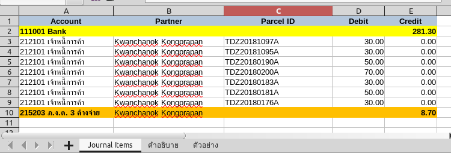2. เลือกรายการที่ต้องทำจ่าย
สร้าง Journal Entry ใหม่ ทำหน้าที่เป็นเสมือนกับ Payment Entry แล้วจึงสร้างรายการด้วยการ Import Excel
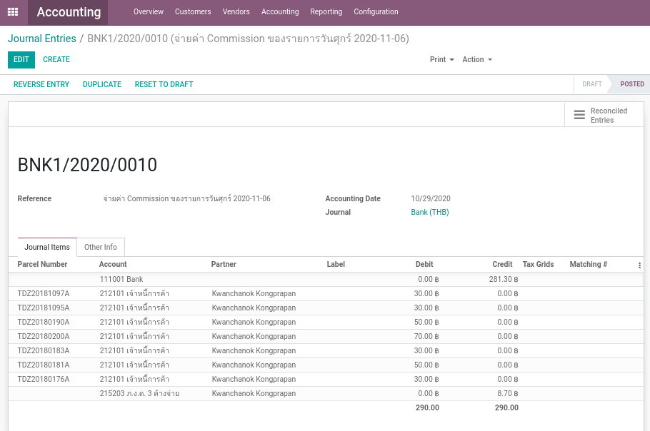Note
ต้องตรวจสอบให้แน่ใจ แล้วจึงค่อย Post
3. ออก Withholding Tax Cert ให้กับผู้รับเงิน
จาก Journal Entry ในขั้นตอนก่อน เลือก Action > Create Withholding Cert
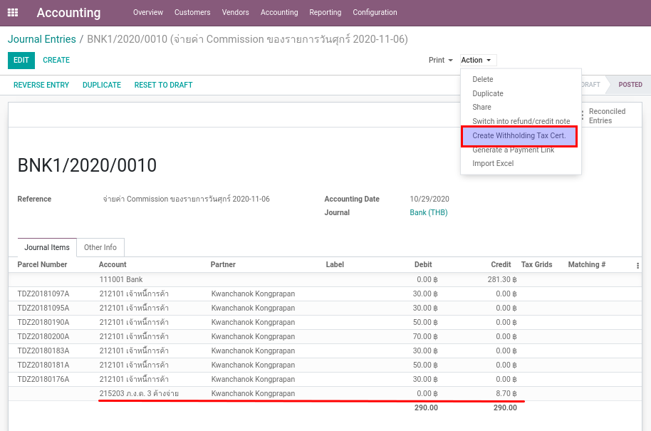3. ออก Withholding Tax Cert ให้กับผู้รับเงิน
ระบบจะช่วยสร้าง Cert จากรายการที่บันทึก Account Code - WHT
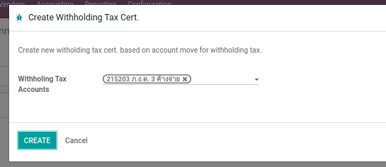3. ออก Withholding Tax Cert ให้กับผู้รับเงิน
ให้ผู้ใช้งานกรอกข้อมูลให้ครบแล้วกด Save ตรวจสอบความถูกต้องแล้วกดปุ่ม Done
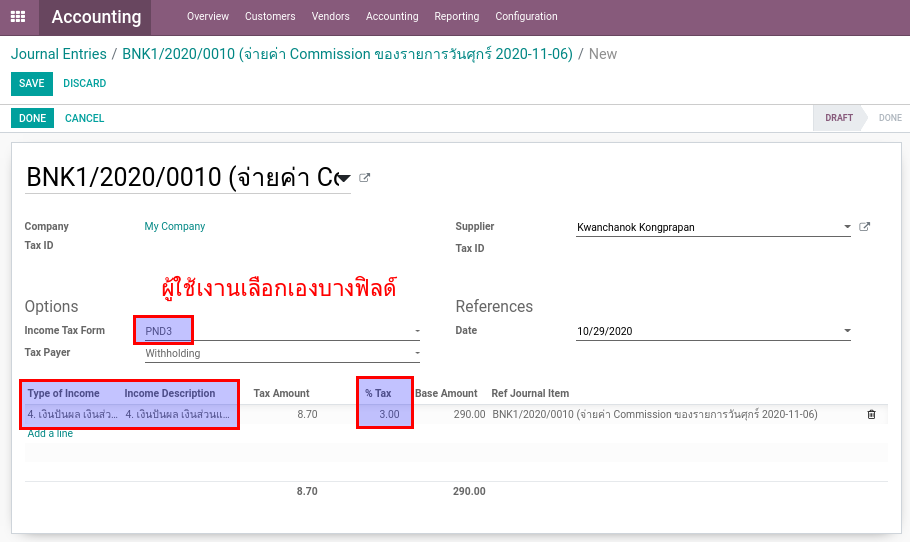3. ออก Withholding Tax Cert ให้กับผู้รับเงิน
เลือก Print > Withholding Tax Cert เป็น PDF
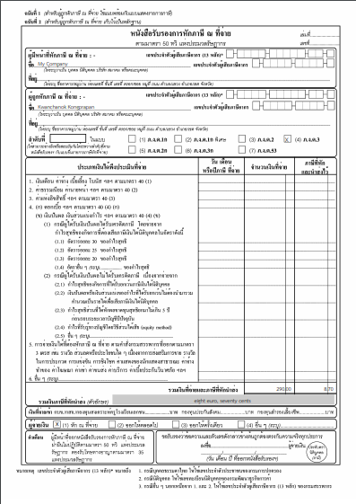Note
ผู้ใช้งานสามารถดู Certificate. ทั้งหมดในภายหลังได้ที่เมนู Accounting > Vendors > WT Certificates
4. ทำการ Reconcile และตรวจสอบผลลัพธ์
- ที่เมนู Mass Automatic Reconcile เลือก Profile = Supplier Payment
- กดปุ่ม Start Auto Reconciliation ระบบจะทำการ Reconcile รายการที่มี Partner และ Parcel ID เดียวกัน
- กดปุ่ม Display Items Reconciled On The Last Run เพื่อดูรายการที่ถูก Reconciled ไป
- หากต้องการยกเลิกสิ่งที่ทำไปให้ทำการ Reverse Entry
4. ทำการ Reconcile และตรวจสอบผลลัพธ์
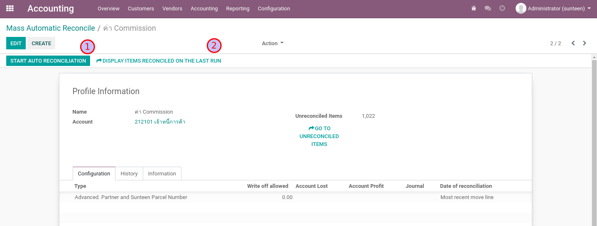Note
เราสามารถตั้ง Schedule Job ให้ Start Auto Reconciliation ได้อย่างอัตโนมัติหากต้องการ